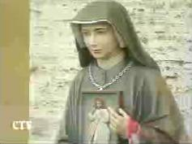

Beginning on February 22, 1931, a Polish nun named Sister Faustina claimed to have seen visions of Jesus, and heard Jesus speak to her soul. Jesus is alleged to have said to Sister Faustina:
|
|
| Source: Diary, Divine Mercy in My Soul, by Blessed Sister M. Faustina Kowalska, published by Marians of the Immaculate Conception, Stockbridge, Massachusetts, 01263, 1998, ISBN 0-944203-04-3. | |
Here are some websites or pages devoted to this Feast of Divine Mercy:
Apostles of Divine Mercy
Pope Dedicates
New Divine Mercy Shrine
The Eucharistic Apostles of The
Divine Mercy
Divine Mercy - Sister M. Faustina Kowalska
Congregation of Marians of the
Immaculate Conception
A Revelation of Divine Mercy
The Divine Mercy
Devotion
Pretty amazing claim isn't it? Merely venerate (worship) this image of Jesus on the Sunday after Easter and you are guaranteed eternal life! Millions of Catholics attend services on the Sunday after Easter expecting to obtain eternal life by merely worshipping an image of Jesus (shown above). Catholics are also taught that if they will go to confession and participate in Communion that day (Diary, 699), all their sins and all punishment due them will be washed away as though they were being baptized again, Divine Mercy Sunday being greater in its effect than a plenary indulgence. (A plenary indulgence only removes temporal punishment due for sins, it does not forgive the sins themselves.)
|
|
Sister Gratia*, from the
Sanctuary of Divine Mercy, Krakow, Poland, the same order as
Sister Faustina, says:
as though God's grace is normally dammed up and not fully accessible on other days. |
|
Image copyrighted by |
"The soul that will go to Confession and receive Holy Communion shall obtain complete forgiveness of sins and punishment. On that day all the divine floodgates through which grace flow are opened." (Diary, 699).
Sister Gratia also suggests that should a notorious sinner die that day, after attending confession and the Mass, they would go straight to heaven (bypassing Purgatory), since all their sins and all punishment due would have been forgiven that day. In Sister Faustina's diary, the alleged apparition of Jesus is also quoted as saying that this feast of Divine Mercy is "the last hope of salvation." Hear Sister Gratia say this. (mp3)
"Say unceasingly the [Divine Mercy] chaplet that I have taught you. Whoever will recite it will receive great mercy at the hour of death. Priests will recommend it to sinners as their last hope of salvation." (Diary, 687).
Sister Gratia also claims that Sister Faustina was so gifted that she was capable of bi-location, the ability to be in two places at the same time!
On April 18, 1993 (Divine Mercy Sunday), Sister Faustina was beatified in Rome by Pope John Paul II, and then canonized on April 30th, 2000 (also Divine Mercy Sunday), so now she is Saint Faustina Kowalska.
4. It is important then that we accept the whole message that comes to us from the word of God on this Second Sunday of Easter, which from now on throughout the Church will be called "Divine Mercy Sunday".
Source: Homily of Pope John Paul II, Canonizing Sr Mary Faustina Kowalska, Sunday, 30 April 2000.
Decree Establishing the Sunday after Easter 'Divine Mercy Sunday issued by the Congregation for Divine Worship and the Discipline of the Sacraments.
| Images � 2001 by CTV (Vatican Central Television) | |
|  | |
| Statue of Sister Faustina
in St. Peter's Square on Divine Mercy Sunday, April 22, 2001. |
Jubilant Catholics
displaying a Divine Mercy Banner for the Pope in St. Peter's Square. |
| Images � 2001 by EWTN (Eternal Word Television Network) | |
| Large Divine Mercy image beside a Catholic altar for veneration on April 22, 2001 | |
So April 22nd, 2001 was the first Divine Mercy Sunday available to all Catholics worldwide, when they could all venerate, as promised by the apparition, the image that is the vessel for grace that will prevent them from perishing, that they may gain eternal life. The net effect of this teaching is that Divine Mercy Sunday will likely become the most heavily attended feast on the Catholic calendar, exceeding even Easter or Christmas, due to the unique advantages attributed to it for obtaining God's mercy.
 |
|
|
Pope John Paul II bowing down |
John 3:16 For God so loved the world, that he gave his only begotten Son, that whosoever believeth in him should not perish, but have everlasting life.
It is faith in Jesus Christ as the Lamb of God that will result in eternal life, not veneration of an image, not even veneration of an image of Jesus. Because this vision of Sister Faustina clearly contradicts the Commandment of God forbidding image worship, it is not from God. There is no light in it. The Feast of Divine Mercy is nothing but idolatry and apostasy, plain and simple, and now it has essentially been canonized by the Roman Catholic Church.